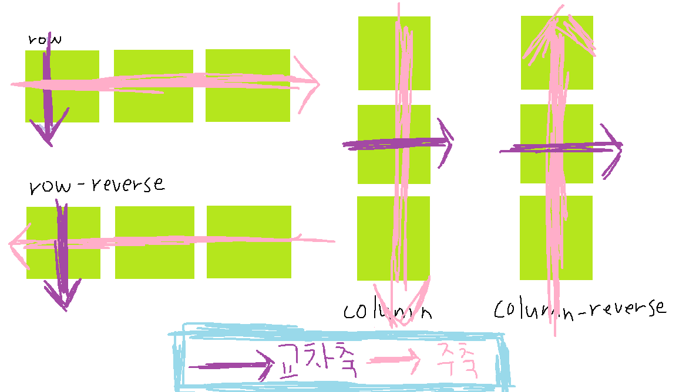

[CSS]
flex(1)
1. Flex box : 가변 상자 레이아웃 (반응형)
- 일차원 상에 사물을 배치할 경우 편리하게 배치할 수 있음
- display: flex; 를 적용
2. Flex container
- flex 요소를 이용하기 위해 먼저 요소들을 flex contianer로 묶어줘야 함
- display 속성을 사용하여 플렉스 박스 형태를 지정
- display: flex; //플렉스 박스를 블록 레벨 요소로 지정
- display: inline-flex; //플렉스 박스를 인라인 레벨 요소로 지정
3. Flex container 속성
1) display : 플렉스 박스 형태 지정
2) flex-direction : 플렉스 방향 지정

- row : 주축을 가로, 교차축을 세로로 지정, 플렉스 항목은 주축 왼쪽에서 오른쪽으로 배치 (기본값)
- row-reverse : 주축을 가로, 교차축을 세로로 지정, 플렉스 항목은 row의 반대축으로 배치
- column :주축을 세로, 교차축을 가로로 지정, 플렉스 항목은 주축 위에서 아래로 배치
- column-reverse : 주축을 세로, 교차축을 가로로 지정, 플렉스 항목은 column의 반대축으로 배치
3) flex-wrap : 플렉스 항목을 한줄 또는 여러줄 배치
- no-wrap : 플렉스 항목들을 한줄로 표시 (기본값)
- wrap : 플렉스 항목들을 여러줄에 표시
- wrap-reverse : 플렉스 항목들을 여러줄에 표시하되, 기존 방향과 반대로 배치
4) flex-flow(2, 3번 속성 축약형) : flex-direction과 flex-wrap 한번에 지정
ex. flex-flow : row;
flex-flow : column wrap-reverse;
5) justify-content : 주축 기준의 배치 방법 지정
- flex-start : 플렉스 항목들을 주축의 시작점을 기준으로 배치 (기본값)
- flex-end : 플렉스 항목들을 주축의 끝점을 기준으로 배치
- center : 플렉스 항목들을 주축의 중앙을 기준으로 배치
- space-between : 첫번째 항목과 마지막 항목은 주축의 시작점과 끝점에 배치한 후 중앙 항목들은 사이에 같은 간격으로 고르게 배치
- space-around: 모든 플렉스 항목들을 같은 간격으로 배치
6) align-items : 한 줄일 때 교차축 기준의 배치 방법 지정
- stretch : 플렉스 항목을 확장하여 교차축 전체를 채움 (기본값)
- flex-start: 플렉스 항목들을 교차축의 시작점을 기준으로 배치
- flex-end: 플렉스 항목을 교차축의 끝점을 기준으로 배치
- center : 플렉스 항목들을 교차축의 중앙을 기준으로 배치
7) align-content : 여러 줄 일 때 교차축 배치 방법 지정
- stretch : 플렉스 항목을 확장하여 교차축 전체를 채움 (기본값)
- flex-start: 플렉스 항목들을 교차축의 시작점을 기준으로 배치
- flex-end: 플렉스 항목을 교차축의 끝점을 기준으로 배치
- center : 플렉스 항목들을 교차축의 중앙을 기준으로 배치
- space-between : 첫번째 항목과 마지막 항목은 교차축의 시작점과 끝점에 배치한 후 중앙 항목들은 사이에 같은 간격으로 고르게 배치
- space-around : 모든 플렉스 항목들을 같은 간격으로 배치